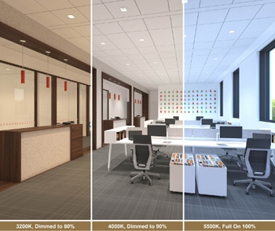
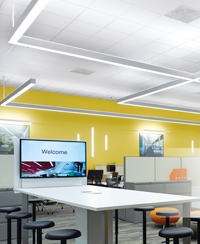
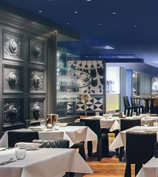

LED luminaires with the ability to deliver varying light color have been on the architectural lighting market since the early days of LED lighting, but improved efficacy, colors, controls, and capabilities have brought them greater acclaim and expanded the range of potential applications. There are three basic categories of color-tunable products:
These products, also referred to as warm dim, blackbody dimming or incandescent-like dimming, mimic incandescent or halogen dimming performance, usually designed for 2700-3000K at full output with a decrease in correlated color temperature (CCT) as the output is reduced, down to as low as 1800K (the color of candlelight). As with incandescent lamps, the light color becomes increasingly warm in appearance (i.e., more yellow and red) as the product dims.
Applications
The light color and dimming quality of incandescent/halogen products are prized in such settings as restaurants, hotel lobbies and guestrooms, ballrooms, theaters, and residential spaces.
Controls
Because the dimming of this type of product is linked to the color change, there is only one control signal and thus one controller per group of luminaires that dim together. Some systems can achieve this function with a phase-cut dimmer, in which the dimming information is carried in the voltage waveform, but this approach may not have as much dimming resolution or smoothness as a control system using 0-10V, DALI, or DMX protocols. The latter three require separate wiring for the intensity/color signal and luminaire power. Alternatively, dim-to-warm luminaires can be equipped with a wireless receiver for control by a wireless transmitter using Zigbee, Wifi, Bluetooth, or another protocol and hard-wired to building power.
Potential Issues
- Sometimes users want to reduce light output without changing color. In these situations (such as in a conference room), it would be helpful to have dimming control that’s separate from color change – so white-tuning might be the better choice.
- Dim-to-amber. Some dim-to-warm systems use only white LEDs along with narrow-band amber LEDs to create the warmer colors. At the very low end of the dimming range of such systems, only the amber LEDs are producing light – which, although warm in appearance, can make skin tones and room finishes look as eerie as they would under high-pressure sodium lamps. If this is a concern, check the color rendering index (CRI) of the light near its lowest dimming setting. As a rule of thumb, it should be at least 80 CRI, but using your eyes to evaluate this in a mock-up is the best way to judge.
- The efficacy of the system is usually lower than that of fixed-white LED luminaires at, for example, 2500K or 2700K.
Some white-tunable products, also called tunable white or Kelvin changing, have two sets of controllable phosphor-coated (PC) LEDs: one with a warm-white color (usually around 2700K) and the second with a cool-white color (usually 5000K to 6500K). By individually raising and lowering the output of the two colored “LED primaries”, white colors between the two color points can be created along the straight line that connects them on a chromaticity diagram (this is called linear white tuning). When only two white PC LEDs are selected, the manufacturer must choose where the mixed colors of white will lie, relative to the blackbody curve. Will the color of white light appear pinkish or purplish as it tracks from one CCT to the next? The blackbody line is curved, so two colors of white cannot track along the blackbody and, the wider the range of CCTs, the greater the maximum deviation from the blackbody (Duv). There are also white-tunable products that use three or more LED primaries, in which case they may have the capability to produce a wider range of colors than just different CCTs of white. However, such products may operate in a mode that allows only color change along the blackbody locus. The advantage of white-tuning products with three or more LED primaries is that they track the curve of the blackbody (called nonlinear white tuning). Some of these products closely track the blackbody curve throughout their tuning range (i.e. their Duv values can be very small), meaning they will not appear green or pink compared to a reference light source whose chromaticity falls right on the blackbody curve.
Applications
White tuning allows for changing the color of light from warm to neutral to cool in appearance, which may be desirable for a range of reasons, from aesthetic to medical. Such tuning of white light can be used to:
- Provide apparent cooling or warming to a room. This can create psychological effects – for example, by using cooler-colored light to make occupants feel cooler on a sweltering summer day, or the reverse.
- Match room finishes, especially when they change on a seasonal basis, or when a space undergoes an interior-design remodeling or a branding/theme change.
- Suit the preferences of a new tenant, owner, or user.
- Simulate daylight or candlelight to set a mood, or match gallery lighting to the works of art on display.
Match the color of daylight in a windowed lobby by, for example, tuning the light to be warmer during early morning and late afternoon and cooler at mid-day. - Assist with behavior control. Some classroom studies suggest that the color and intensity of light can be modified to calm or invigorate students, or to focus their attention.
- Support the human circadian system. Light plays a key role in setting and regulating the body’s biological clock. Both the intensity and the spectral content of light can be used to stimulate or suppress the secretion of melatonin and other hormones that in turn affect our mood, alertness, and health. Although the exact mechanisms and effects are not yet fully understood, this may be an important consideration for industrial and medical spaces as well as senior- living facilities, prisons, dormitories, and high-density housing.
- Correct circadian misalignment. Varying the light color and intensity may be used by medical professionals to treat jet lag, sleep disorders, and other conditions.
Controls
Controls are a critical element in white-tuning systems. The most successful products have clever algorithms for tuning from one CCT to another without doubling light levels in the middle ranges. These algorithms are built in to the driver or an interface between the controller and the driver. A white-tuning system requires separate power for the LED driver and for the control signal, so it’s common to see a dimmer for each control signal: one for power and intensity level, and a second for color. The two separate controls can also be combined into a user interface that has separate dials, sliders, or buttons for controlling color and intensity independently. The most common control protocols are 0-10V, DMX, DALI, a proprietary control protocol, or a system where the luminaire is powered through the building circuits but the luminaire is equipped with a wireless (or power-line-carrier) receiver that interprets wireless Zigbee, Wifi, Bluetooth, or other protocol signals. Each of these dimming protocols has its advantages and disadvantages. See more information on controlling LED color-tunable products.
Potential Issues
- Each of the different user interfaces has its own pros and cons. Having one slider to change CCT and another for intensity may be more intuitive, since the two visual qualities are separately controlled, but having separate sliders for dimming the warm LED primaries and the cool LED primaries may make it easier to achieve both the desired CCT and the desired output. While these and other related questions can be studied through controlled experimentation, the ultimate answers may be very specific to the type of application and to the individual who needs to make the adjustments in the application.
- Wiring of white-tunable luminaires and controls may be more complex than required for fixed-color LED luminaires.
- At this point in time, the efficacy of white-tuning LED systems, while higher than full-color tuning systems, is still lower than that of fixed white LEDs.
These products, also referred to as RGB, RGBA, RGBW, spectrally tunable, or color changing, usually have three or more different LED primaries that can be individually varied in output to create a mixture of light that is white, a tint of white, or a saturated hue. The individual LEDs used in a full-color-tuning mixture can be very narrow band LEDs (producing a narrow range of blue or red, for example), or also monochromatic but with phosphor coatings that produce a slightly wider spread of color (e.g., a “mint” green LED is a phosphor-coated blue) or white PC LEDs (W) produced by phosphor-coating a blue- or violet-pump LED. Usually the different monochromatic LED colors include red, green, and blue (RGB, the primary colors of light), but these can be augmented with amber (A), one or more white PC LEDs (W), and other monochromatic colors. The minimum number of LED colors is three for full-color tuning, but four-, five-, and seven-color systems are also on the architectural lighting market, and some sophisticated color systems use even more unique colors of individual LEDs.
Applications
One unique advantage of this type of color-tuning is the ability to move the color point off the blackbody locus or, put more simply, to move beyond different CCTs of white light toward light with a distinct color. For example, such a product could provide 4000K light in an office during the day and then be tuned for a purple-themed party in the evening. This makes full-color-tunable products well-suited for such applications as theaters, theme parks, and restaurants.
Another advantage of full-color tuning is the ability to match the chromaticity of any other light source. Light from fluorescent lamps, for example, is difficult to match with LEDs, because “3500 K” can be created by dozens of different combinations of spectra, and the chromaticity can appear distinctly green or pink while still legitimately calculating to 3500 K. The only way to closely match the chromaticity of a light source is by manipulating the output of individual LEDs.
White matching the color rendering of different sources can be even more difficult, controlling the colors of individual LEDs introduces the option of tuning the spectrum to enhance colors for retail applications – for example, making a floral arrangement really “pop” in appearance.
Controls
The wide variability of full-color-tuning requires a user interface that is more complicated than a simple slide dimmer. A control protocol such as DMX, DALI, or wireless with high resolution is required, and the luminaire must be powered separately from the intensity and color control signals.
Potential Issues
- Initial programming and reprogramming of the controls may not be intuitive. It may make sense to hire a consultant to make the changes, or train a facility manager or in-house specialist to do it.
- Completely matching the chromaticity and rendering to another source may be difficult, because there are many of ways to create “3000 K” from a source with three or more LED primaries, for example, but none of those recipes will produce exactly the same appearance or color-rendering results. If color-matching is an important feature, choose controllers that have a “copy” function, which allows the user to copy the full spectral power distribution of the source to another luminaire.
- Skewing colors. The configuration of RGB, RGBA, RGBW, etc., permits the selection of almost infinite colors, which can include combined spectra that oversaturate or undersaturate environmental colors. Color saturation is often preferred by observers, because it makes the colors of objects vibrant and distinct, but it may not be appropriate in applications where careful color matching is critical. Excessive color saturation can produce a “cartoonlike” appearance, while undersaturating colors can make a space look drab and greyed-out.
- System efficacy may be lower than when using fixed-color white LED products. At the present time, green LEDs are lower in efficacy than white LEDs, lowering the overall system efficacy. This may change, however, as manufacturers solve the “green gap.”
Understanding all the variations in color-tunable products can be challenging, so it may be helpful to consider each product type in terms of its most common applications, control options, and potential issues or complications.